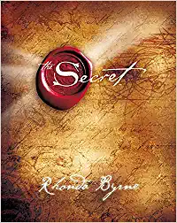

|  | The Secret by Rhonda Byrne |
"The Secret" is a self-help book that was written by Rhonda Byrne. The book's main message is that people can create their own reality through positive thoughts and visualization. According to the author, if you focus your thoughts and feelings on what you want in life, and believe that you can have it, then you will attract it to you. The book also explores the idea of the law of attraction, which states that you can attract positive things into your life by having a positive attitude. The book encourages readers to change their negative thoughts and beliefs into positive ones, in order to create a better life for themselves.
The Secret is a self-help book that was written by Rhonda Byrne in 2006.
It is based on the concept of the Law of Attraction, which states that you can attract positive experiences into your life by focusing your thoughts and feelings on what you want.
The book claims that the universe responds to your thoughts and feelings, and that positive thoughts and feelings attract positive experiences, while negative thoughts and feelings attract negative experiences.
According to The Secret, you can use the power of your thoughts and feelings to create your reality, and that by doing so, you can achieve anything you want in life.
The book argues that the Law of Attraction has been known and used by successful people throughout history, but that it has been kept a secret from the masses.
The Secret teaches that you can harness the power of the Law of Attraction to achieve wealth, health, happiness, and success in all areas of your life.
It encourages readers to focus on their thoughts and feelings, and to make sure that they are positive and aligned with their goals and desires.
The book also provides practical tips and techniques for using the Law of Attraction, such as visualization, affirmations, and gratitude.
The Secret emphasizes the importance of taking action towards your goals, and that you cannot simply sit around and wait for good things to happen to you.
It also stresses that it is important to let go of negative thoughts, beliefs, and emotions, and to replace them with positive ones.
The book argues that the key to success is to focus on what you want, not what you do not want, and to stay positive and optimistic even in the face of setbacks and challenges.
The Secret teaches that the universe is abundant, and that there is enough of everything for everyone.
It argues that by focusing on abundance, you can attract more abundance into your life.
The book also stresses the importance of giving, and that by helping others, you will attract more positive experiences into your life.
The Secret claims that the Law of Attraction is a universal law, and that it works for everyone, regardless of their background, beliefs, or circumstances.
It encourages readers to take responsibility for their lives, and to take control of their thoughts, feelings, and actions.
The book argues that the only limit to what you can achieve in life is the limit you place on yourself with your thoughts and beliefs.
The Secret encourages readers to pursue their passions and dreams, and to take risks and follow their hearts.
It also argues that you can attract the right people and opportunities into your life by focusing on your goals and desires.
Overall, The Secret teaches that by focusing on the positive, and by harnessing the power of the Law of Attraction, you can create a life filled with happiness, success, and abundance.
The Secret by Rhonda Byrne |